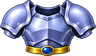

Dragon Snake
By level
Where it lives deeper in a region it is stronger. See Levels.
| Level | Hitpoints | Attack | Defence | Experience |
|---|---|---|---|---|
| 28 | 929 | 30 | 6 | 440 |
| 29 | 991 | 31 | 6 | 455 |
| 32 | 1241 | 33 | 6 | 499 |
Locations
- The Serpent's Deep: Floor 2 (level 29)
- The Serpent's Deep: the Deepest Hall (level 32)
- The Cuelebre's Lair (level 28)
Drops
| Item | Amount | Chance a kill |
|---|---|---|
| 100 | 11.1% | |
| 200 | 5.6% | |
 Ceramic Armor | 1 | 1.7% |
| 1 | 60% |
Taming
Weaken it, stand next to it and choose Tame with a  Monster Treat. Taming 69 is the comfortable level; from Taming 49 it can be tried. See Taming and Beasts.
Monster Treat. Taming 69 is the comfortable level; from Taming 49 it can be tried. See Taming and Beasts.
| Element | Shadow |
|---|---|
| Body | ground |
| Ranch produce | |
| Moves | Tackle, Hex, Bite, Roar (level 1); Tackle, Hex, Drain Touch, Nightmare (level 12) |